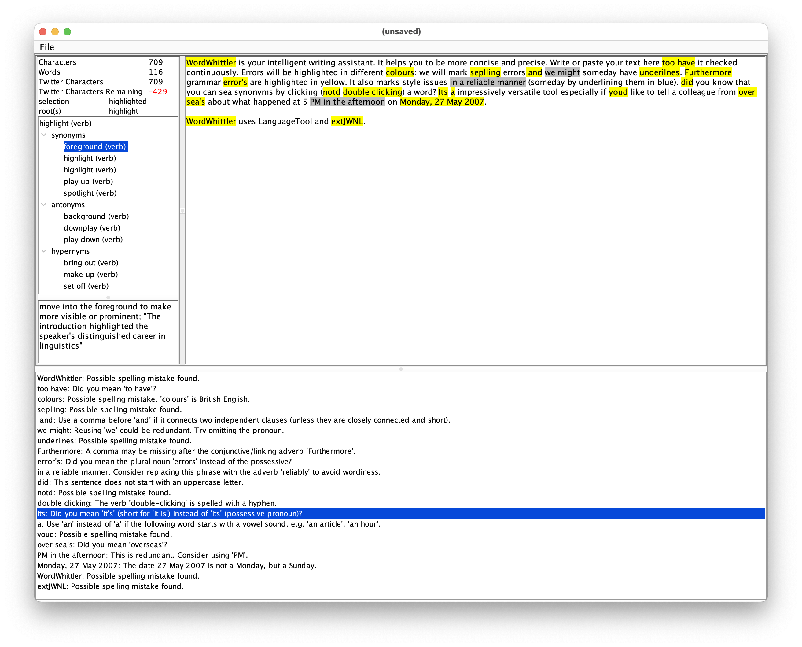

WordWhittler is a writing assistant. It leverages LanguageTool and WordNet (via extJWNL) to provide you with hints and suggestions on how to improve your writing. When composing text, the word under your cursor is looked up, providing synomymns and other related words at a glance.

WordWhittler is open source. Source code is available at https://github.com/mcculley/WordWhittler.
You can download an executable JAR.